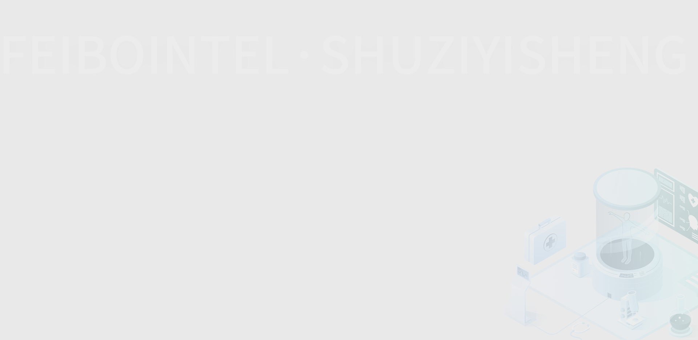
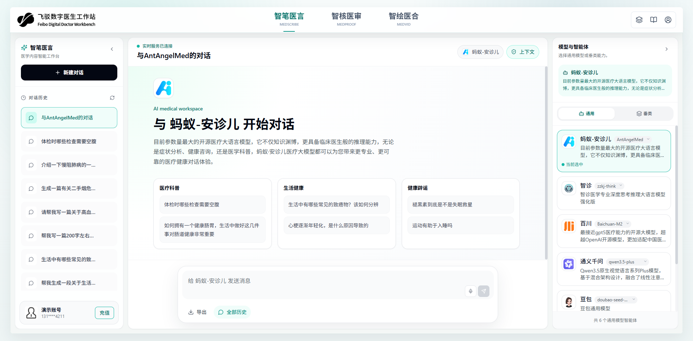

MEDSCRIBE
智笔医言
面向医生、专家与医学内容团队的 AI 对话入口，可按专科智能体进行问答、生成科普内容、沉淀历史会话。
- 医学内容智能工作台
- 模型与智能体选择
- 对话历史与内容导出

飞驳科技（杭州）有限公司
面向医学内容生产、医学审核与健康科普视频创作，将 AI 智能对话、文案审校、数字人视频合成整合到同一套医疗科技工作流。
Product Positioning
Digital Doctor Workbench
内容来自现有 FEIBO 前端工作台：智笔医言承担医学内容智能对话，智核医审承担文案审核，智绘医合承担数字人视频合成。

MEDSCRIBE
面向医生、专家与医学内容团队的 AI 对话入口，可按专科智能体进行问答、生成科普内容、沉淀历史会话。
Capabilities
结合医学主题、专科模型和提示模板，辅助生成科普、问答、宣教和视频脚本文案。
支持医生待审批、专家待审批、平台终审、审核完成、审核驳回等状态流转。
从审核文案回填到数字人脚本，选择数字人、声音与模板后完成医学科普视频合成。
围绕会员、AI 资源余额、子账号和个人信息，保持团队使用状态清晰可见。
Workflow
选择医学智能体，输入病例科普、健康宣教或内容创作需求，由智笔医言生成结构化初稿。
Medical Popularization
现有工作台案例覆盖健康知识普及、知情同意说明、疾病早筛、伤口处理与青少年身高管理等主题。
Governance
平台围绕账户信息、访问日志、操作记录、上传与生成内容建立数据保护机制，结合数据加密、访问控制和安全审计，保障医学内容生产过程可追踪、可管理。